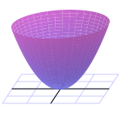

Section9.1Functions of Several Variables and Three Dimensional Space
Motivating Questions
What is a function of several variables? What do we mean by the domain of a function of several variables?
How do we find the distance between two points in \(\R^3\text{?}\) What is the equation of a sphere in \(\R^3\text{?}\)
What is a trace of a function of two variables? What does a trace tell us about a function?
What is a level curve of a function of two variables? What does a level curve tell us about a function?
Throughout our mathematical careers we have studied functions of a single variable. We define a function of one variable as a rule that assigns exactly one output to each input. We analyze these functions by looking at their graphs, calculating limits, differentiating, integrating, and more. Functions of several variables will be the main focus of Chapters 10 and 11, where we will analyze these functions by looking at their graphs, calculating limits, differentiating, integrating, and more. We will see that many of the ideas from single variable calculus translate well to functions of several variables, but we will have to make some adjustments as well. In this chapter we introduce functions of several variables and then discuss some of the tools (vectors and vector-valued functions) that will help us understand and analyze functions of several variables.
Preview Activity9.1.1.
Suppose you invest money in an account that pays 5% interest compounded continuously. If you invest \(P\) dollars in the account, the amount \(A\) of money in the account after \(t\) years is given by
\begin{equation*}
A = Pe^{0.05t}.
\end{equation*}
The variables \(P\) and \(t\) are independent of each other, so using functional notation we write
Find the amount of money in the account after 7 years if you originally invest 1000 dollars.
Evaluate \(A(5000,8)\text{.}\) Explain in words what this calculation represents.
Now consider only the situation where the amount invested is fixed at 1000 dollars. Calculate the amount of money in the account after \(t\) years as indicated in Table 9.1.1. Round payments to the nearest penny.
Table9.1.1.Amount of money in an account with an initial investment of 1000 dollars.
Duration (in years)
  2   
  3   
  4   
  5   
  6   
Amount (dollars)
Now consider the situation where we want to know the amount of money in the account after 10 years given various initial investments. Calculate the amount of money in the account as indicated in Table 9.1.2. Round payments to the nearest penny.
Table9.1.2.Amount of money in an account after 10 years.
Initial investment (dollars)
   500   
  1000   
  5000   
  7500   
  10000   
Amount (dollars)
Describe as best you can the combinations of initial investments and time that result in an account containing $10,000.
Subsection9.1.1Functions of Several Variables
Up to this point we have been concerned with functions of a single variable. What defined such a function is that every input in the domain produced a unique output in the range. We saw similar behavior in Preview Activity 9.1.1, where each pair \((P,t)\) of inputs produces a unique output \(A(P,t)\text{.}\) Additionally, the two variables \(P\) and \(t\) had no real relation to each other. That is, we could choose any value of \(P\) without considering what value \(t\) might have, and we could select any value of \(t\) to use without regard to what value \(P\) might have. For that reason we say that the variables \(t\) and \(P\) are independent of each other. Thus, we call \(A = A(P,t)\) a function of the two independent variables \(P\) and \(t\text{.}\) This is the key idea in defining a function of two independent variables.
Definition9.1.3.
A function \(f\) of two independent variables is a rule that assigns to each ordered pair \((x,y)\) in some set \(D\) exactly one real number \(f(x,y)\text{.}\)
There is, of course, no reason to restrict ourselves to functions of only two variables—we can use any number of variables we like. For example,
defines \(f\) as a function of the three variables \(x\text{,}\)\(y\text{,}\) and \(z\text{.}\) In general, a function of \(n\) independent variables is a rule that assigns to an ordered \(n\)-tuple \((x_1, x_2, \ldots, x_n)\) in some set \(D\) exactly one real number.
As with functions of a single variable, it is important to understand the set of inputs for which the function is defined.
Definition9.1.4.
The domain of a function \(f\) is the set of all inputs at which the function is defined.
Activity9.1.2.
Identify the domain of each of the following functions. Draw a picture of each domain in the \(xy\)-plane.
Subsection9.1.2Representing Functions of Two Variables
One of the techniques we use to study functions of one variable is to create a table of values. We can do the same for functions of two variables, except that our tables will have to allow us to keep track of both input variables. We can do this with a 2-dimensional table, where we list the \(x\)-values down the first column and the \(y\)-values across the first row. As an example, suppose we launch a projectile, using a golf club, a cannon, or some other device, from ground level. Under ideal conditions (ignoring wind resistance, spin, or any other forces except the force of gravity) the horizontal distance the object will travel depends on the initial velocity \(x\) the object is given, and the angle \(y\) at which it is launched. If we let \(f\) represent the horizontal distance the object travels, then \(f\) is a function of the two variables \(x\) and \(y\text{,}\) and we represent \(f\) in functional notation by
where \(g\) is the acceleration due to gravity. (Note that \(g\) is constant, 32 feet per second squared. We will derive this equation in a later section.) To create a table of values for \(f\text{,}\) we list the \(x\)-values down the first column and the \(y\)-values across the first row. The value \(f(x,y)\) is then displayed in the location where the \(x\) row intersects the \(y\) column, as shown in Table 9.1.5 (where we measure \(x\) in feet per second and \(y\) in radians).
Table9.1.5.Values of \(f(x,y) = \frac{x^2 \sin(2y)}{g}\text{.}\)
\(x\backslash y\)
\(0.2\)
\(0.4\)
\(0.6\)
\(0.8\)
\(1.0\)
\(1.2\)
\(1.4\)
25
7.6
14.0
18.2
19.5
17.8
13.2
6.5
50
30.4
56.0
72.8
78.1
71.0
26.2
75
68.4
163.8
175.7
159.8
118.7
58.9
100
121.7
224.2
291.3
312.4
284.2
211.1
104.7
125
190.1
350.3
455.1
444.0
329.8
163.6
150
273.8
504.4
655.3
702.8
639.3
474.9
235.5
175
372.7
686.5
892.0
956.6
870.2
646.4
200
486.8
896.7
1165.0
1249.5
1136.6
844.3
418.7
225
616.2
1134.9
1474.5
1581.4
1438.5
1068.6
530.0
250
760.6
1401.1
1952.3
1776.0
1319.3
654.3
Activity9.1.3.
Complete Table 9.1.5 by filling in the missing values of the function \(f\text{.}\) Round entries to the nearest tenth.
If \(f\) is a function of a single variable \(x\text{,}\) then we define the graph of \(f\) to be the set of points of the form \((x,f(x))\text{,}\) where \(x\) is in the domain of \(f\text{.}\) We then plot these points using the coordinate axes in order to visualize the graph. We can do a similar thing with functions of several variables. Table 9.1.5 identifies points of the form \((x,y,f(x,y))\text{,}\) and we define the graph of \(f\) to be the set of these points.
Definition9.1.6.
The graph of a function \(f = f(x,y)\) is the set of points of the form \((x,y,f(x,y))\text{,}\) where the point \((x,y)\) is in the domain of \(f\text{.}\)
We also often refer to the graph of a function \(f\) of two variables as the surface generated by \(f\text{.}\) Points in the form \((x,y,f(x,y))\) are in three dimensions, so plotting these points takes a bit more work than graphs of functions in two dimensions. To plot these three-dimensional points, we need to set up a coordinate system with three mutually perpendicular axes — the \(x\)-axis, the \(y\)-axis, and the \(z\)-axis (called the coordinate axes). There are essentially two different ways we could set up a 3D coordinate system, as shown in Figure 9.1.7; thus, before we can proceed, we need to establish a convention.
Figure9.1.7.Left: A left hand system. Right: A right hand system
The distinction between these two figures is subtle, but important. In the coordinate system shown at left in Figure 9.1.7, imagine that you are sitting on the positive \(z\)-axis next to the label “\(z\text{.}\)” Looking down at the \(x\)- and \(y\)-axes, you see that the \(y\)-axis is obtained by rotating the \(x\)-axis by 90\(^\circ\) in the clockwise direction. Again sitting on the positive \(z\)-axis in the coordinate system at right in Figure 9.1.7, you see that the \(y\)-axis is obtained by rotating the \(x\)-axis by 90\(^\circ\) in the counterclockwise direction.
We call the coordinate system at right in Figure 9.1.7 a right-hand system; if we point the index finger of our right hand along the positive \(x\)-axis and our middle finger along the positive \(y\)-axis, then our thumb points in the direction of the positive \(z\)-axis. Following mathematical conventions, we choose to use a right-hand system throughout this book.
Now that we have established a convention for a right-hand system, we can draw a graph of the distance function defined by \(f(x,y) = \frac{x^2 \sin(2y)}{g}\text{.}\) Note that the function \(f\) is continuous in both variables, so when we plot these points in the right hand coordinate system, we can connect them all to form a surface in 3-space. The graph of the distance function \(f\) is shown in Figure 9.1.8.
Figure9.1.8.The distance surface.
There are many graphing tools available for drawing three-dimensional surfaces as indicated in the Preface (see Links to interactive graphics in Features of the Text). Since we will be able to visualize graphs of functions of two independent variables, but not functions of more than two variables, we will primarily deal with functions of two variables in this text. It is important to note, however, that the techniques we develop apply to functions of any number of variables.
Notation: We let \(\R^2\) denote the set of all ordered pairs of real numbers in the plane (two copies of the real number system) and let \(\R^3\) represent the set of all ordered triples of real numbers (which constitutes three-space).
Subsection9.1.3Some Standard Equations in Three-Space
In addition to graphing functions, we will also want to understand graphs of some simple equations in three dimensions. For example, in \(\R^2\text{,}\) the graphs of the equations \(x=a\) and \(y=b\text{,}\) where \(a\) and \(b\) are constants, are lines parallel to the coordinate axes. In the next activity we consider their three-dimensional analogs.
Activity9.1.4.
Consider the set of points \((x,y,z)\) that satisfy the equation \(x=2\text{.}\) Describe this set as best you can.
Consider the set of points \((x,y,z)\) that satisfy the equation \(y=-1\text{.}\) Describe this set as best you can.
Consider the set of points \((x,y,z)\) that satisfy the equation \(z=0\text{.}\) Describe this set as best you can.
Activity 9.1.4 shows that the equations where one independent variable is constant lead to planes parallel to ones that result from a pair of the coordinate axes. When we make the constant 0, we get the coordinate planes. The \(xy\)-plane satisfies \(z=0\text{,}\) the \(xz\)-plane satisfies \(y=0\text{,}\) and the \(yz\)-plane satisfies \(x=0\) (see Figure 9.1.9).
Figure9.1.9.The coordinate planes.
On a related note, we define a circle in \(\R^2\) as the set of all points equidistant from a fixed point. In \(\R^3\text{,}\) we call the set of all points equidistant from a fixed point a sphere. To find the equation of a sphere, we need to understand how to calculate the distance between two points in three-space, and we explore this idea in the next activity.
Activity9.1.5.
Let \(P=(x_0, y_0, z_0)\) and \(Q=(x_1, y_1, z_1)\) be two points in \(\R^3\text{.}\) These two points form opposite vertices of a rectangular box whose sides are planes parallel to the coordinate planes as illustrated in Figure 9.1.10, and the distance between \(P\) and \(Q\) is the length of the blue diagonal shown in Figure 9.1.10.
Figure9.1.10.The distance formula in \(\R^3\text{.}\)
Consider the right triangle \(PRS\) in the base of the box whose hypotenuse is shown as the red line in Figure 9.1.10. What are the coordinates of the vertices of this triangle? Since this right triangle lies in a plane, we can use the Pythagorean Theorem to find a formula for the length of the hypotenuse of this triangle. Find such a formula, which will be in terms of \(x_0\text{,}\)\(y_0\text{,}\)\(x_1\text{,}\) and \(y_1\text{.}\)
Now notice that the triangle \(PRQ\) whose hypotenuse is the blue segment connecting the points \(P\) and \(Q\) with a leg as the hypotenuse \(PR\) of the triangle found in part (a) lies entirely in a plane, so we can again use the Pythagorean Theorem to find the length of its hypotenuse. Explain why the length of this hypotenuse, which is the distance between the points \(P\) and \(Q\text{,}\) is
Equation (9.1.1) can be used to derive the formula for a sphere centered at a point \((x_0,y_0,z_0)\) with radius \(r\text{.}\) Since the distance from any point \((x,y,z)\) on such a sphere to the point \((x_0,y_0,z_0)\) is \(r\text{,}\) the point \((x,y,z)\) will satisfy the equation
\begin{equation*}
\sqrt{(x-x_0)^2 + (y-y_0)^2 + (z-z_0)^2} = r
\end{equation*}
Squaring both sides, we come to the standard equation for a sphere.
The equation of a sphere.
The equation of a sphere with center \((x_0,y_0,z_0)\) and radius \(r\) is
This makes sense if we compare this equation to its two-dimensional analogue, the equation of a circle of radius \(r\) in the plane centered at \((x_0,y_0)\text{:}\)
When we study functions of several variables we are often interested in how each individual variable affects the function in and of itself. In Preview Activity 9.1.1, we saw that the amount of money in an account depends on the amount initially invested and the duration of the investment. However, if we fix the initial investment, the amount of money in the account depends only on the duration of the investment, and if we set the duration of the investment constant, then the amount of money in the account depends only on the initial investment. This idea of keeping one variable constant while we allow the other to change will be an important tool for us when studying functions of several variables.
As another example, consider again the distance function \(f\) defined by
where \(x\) is the initial velocity of an object in feet per second, \(y\) is the launch angle in radians, and \(g\) is the acceleration due to gravity (32 feet per second squared). If we hold the launch angle constant at \(y=0.6\) radians, we can consider \(f\) a function of the initial velocity alone. In this case we have
We can plot this curve on the surface by tracing out the points on the surface when \(y = 0.6\text{,}\) as shown at left in Figure 9.1.11. The formula clearly shows that \(f\) is quadratic in the \(x\)-direction. More descriptively, as we increase the launch velocity while keeping the launch angle constant, the horizontal distance the object travels increases proportional to the square of the initial velocity.
Similarly, if we fix the initial velocity at 150 feet per second, we can consider the distance as a function of the launch angle only. In this case we have
We can again plot this curve on the surface by tracing out the points on the surface when \(x=150\text{,}\) as shown at right in Figure 9.1.11. The formula clearly show that \(f\) is sinusoidal in the \(y\)-direction. More descriptively, as we increase the launch angle while keeping the initial velocity constant, the horizontal distance traveled by the object is proportional to the sine of twice the launch angle.
Figure9.1.11.Left: The trace with \(y = 0.6\text{.}\) Right: The trace with \(x = 150\text{.}\)
The curves we define when we fix one of the independent variables in our two variable function are called traces.
Definition9.1.12.
A trace of a function \(f\) of two independent variables \(x\) and \(y\) in the \(x\) direction is a curve of the form \(z = f(x,c)\text{,}\) where \(c\) is a constant. Similarly, a trace of a function \(f\) of two independent variables \(x\) and \(y\) in the \(y\) direction is a curve of the form \(z = f(c,y)\text{,}\) where \(c\) is a constant.
Understanding trends in the behavior of functions of two variables can be challenging, as can sketching their graphs; traces help us with each of these tasks.
Activity9.1.6.
In the following questions, we investigate the use of traces to better understand a function through both tables and graphs.
Identify the \(y = 0.6\) trace for the distance function \(f\) defined by \(f(x,y) =
\frac{x^2 \sin(2y)}{g}\) by highlighting or circling the appropriate cells in Table 9.1.5. Write a sentence to describe the behavior of the function along this trace.
Identify the \(x = 150\) trace for the distance function by highlighting or circling the appropriate cells in Table 9.1.5. Write a sentence to describe the behavior of the function along this trace. Figure9.1.13.Coordinate axes to sketch traces.
For the function \(g\) defined by \(g(x,y) = x^2 + y^2 + 1\text{,}\) explain the type of function that each trace in the \(x\) direction will be (keeping \(y\) constant). Plot the \(y=-4\text{,}\)\(y=-2\text{,}\)\(y=0\text{,}\)\(y=2\text{,}\) and \(y=4\) traces in 3-dimensional coordinate system provided in Figure 9.1.13.
For the function \(g\) defined by \(g(x,y) = x^2 + y^2 + 1\text{,}\) explain the type of function that each trace in the \(y\) direction will be (keeping \(x\) constant). Plot the \(x=-4\text{,}\)\(x=-2\text{,}\)\(x=0\text{,}\)\(x=2\text{,}\) and \(x=4\) traces in 3-dimensional coordinate system in Figure 9.1.13.
Describe the surface generated by the function \(g\text{.}\)
Subsection9.1.5Contour Maps and Level Curves
We have all seen topographic maps such as the one of the Porcupine Mountains in the upper peninsula of Michigan shown in Figure 9.1.14. 1  The curves on these maps show the regions of constant altitude. The contours also depict changes in altitude: contours that are close together signify steep ascents or descents, while contours that are far apart indicate only slight changes in elevation. Thus, contour maps tell us a lot about three-dimensional surfaces. Mathematically, if \(f(x,y)\) represents the altitude at the point \((x,y)\text{,}\) then each contour is the graph of an equation of the form \(f(x,y) = k\text{,}\) for some constant \(k\text{.}\)
Figure9.1.14.Contour map of the Porcupine Mountains.
Activity9.1.7.
On the topographical map of the Porcupine Mountains in Figure 9.1.14,
identify the highest and lowest points you can find;
from a point of your choice, determine a path of steepest ascent that leads to the highest point;
from that same initial point, determine the least steep path that leads to the highest point.
Curves on a surface that describe points at the same height or level are called level curves.
Definition9.1.15.
A level curve (or contour) of a function \(f\) of two independent variables \(x\) and \(y\) is a curve of the form \(k = f(x,y)\text{,}\) where \(k\) is a constant.
Topographical maps can be used to create a three-dimensional surface from the two-dimensional contours or level curves. For example, level curves of the distance function defined by \(f(x,y) = \frac{x^2 \sin(2y)}{32}\) plotted in the \(xy\)-plane are shown at left in Figure 9.1.16. If we lift these contours and plot them at their respective heights, then we get a picture of the surface itself, as illustrated at right in Figure 9.1.16.
Figure9.1.16.Left: Level curves. Right: Level curves at appropriate heights.
The use of level curves and traces can help us construct the graph of a function of two variables.
Activity9.1.8.
Figure9.1.17.Left: Level curves for \(f(x,y) = x^2+y^2\text{.}\) Right: Level curves for \(g(x,y) = \sqrt{x^2+y^2}\text{.}\)
Let \(f(x,y) = x^2+y^2\text{.}\) Draw the level curves \(f(x,y) = k\) for \(k=1\text{,}\)\(k=2\text{,}\)\(k=3\text{,}\) and \(k=4\) on the left set of axes given in Figure 9.1.17. (You decide on the scale of the axes.) Explain what the surface defined by \(f\) looks like.
Let \(g(x,y) = \sqrt{x^2+y^2}\text{.}\) Draw the level curves \(g(x,y) = k\) for \(k=1\text{,}\)\(k=2\text{,}\)\(k=3\text{,}\) and \(k=4\) on the right set of axes given in Figure 9.1.17. (You decide on the scale of the axes.) Explain what the surface defined by \(g\) looks like.
Compare and contrast the graphs of \(f\) and \(g\text{.}\) How are they alike? How are they different? Use traces for each function to help answer these questions.
The traces and level curves of a function of two variables are curves in space. In order to understand these traces and level curves better, we will first spend some time learning about vectors and vector-valued functions in the next few sections and return to our study of functions of several variables once we have those more mathematical tools to support their study.
Subsection9.1.6A gallery of functions
We end this section by considering a collection of functions and illustrating their graphs and some level curves.

Figure9.1.18.\(z=x^2+y^2\)
Figure9.1.19.\(z=4-(x^2+y^2)\)
Figure9.1.20.\(z=\sqrt{x^2+y^2}\)
Figure9.1.21.\(z=x^2-y^2\)
Figure9.1.22.\(z=\sin(x)+\sin(y)\)
Figure9.1.23.\(z=y^2 - x^3 + x\)
Figure9.1.24.\(z=xye^{-x^2-y^2}\)
Subsection9.1.7Summary
A function \(f\) of several variables is a rule that assigns a unique number to an ordered collection of independent inputs. The domain of a function of several variables is the set of all inputs for which the function is defined.
In \(\R^3\text{,}\) the distance between points \(P=(x_0, y_0, z_0)\) and \(Q=(x_1, y_1, z_1)\) (denoted as \(|PQ|\)) is given by the formula
A trace of a function \(f\) of two independent variables \(x\) and \(y\) is a curve of the form \(z = f(c,y)\) or \(z = f(x,c)\text{,}\) where \(c\) is a constant. A trace tells us how the function depends on a single independent variable if we treat the other independent variable as a constant.
A level curve of a function \(f\) of two independent variables \(x\) and \(y\) is a curve of the form \(k = f(x,y)\text{,}\) where \(k\) is a constant. A level curve describes the set of inputs that lead to a specific output of the function.
Sketch a contour diagram of each function. Then, decide whether its contours are predominantly lines, parabolas, ellipses, or hyperbolas.
\(\displaystyle z = x^2 - 5 y^2\)
\(\displaystyle z = x^2 + 2 y^2\)
\(\displaystyle z = y - 3 x^2\)
\(\displaystyle z = - 5 x^2\)
3.
Match the surfaces with the verbal description of the level curves by placing the letter of the verbal description to the left of the number of the surface.
\(\displaystyle z = 2x^2 + 3y^2\)
\(\displaystyle z = x^2 + y^2\)
\(\displaystyle z = \frac{1}{x-1}\)
\(\displaystyle z = \sqrt{(25 - x^2 - y^2)}\)
\(\displaystyle z = 2x + 3y\)
\(\displaystyle z = \sqrt{(x^2 + y^2)}\)
\(\displaystyle z = xy\)
a collection of unequally spaced concentric circles
a collection of unequally spaced parallel lines
a collection of equally spaced concentric circles
two straight lines and a collection of hyperbolas
a collection of concentric ellipses
a collection of equally spaced parallel lines
4.
The domain of the function \(f(x,y) = \sqrt x + \sqrt y\) is
5.
Find the equation of the sphere centered at \((-6, -4, -3)\) with radius 3. Normalize your equations so that the coefficient of \(x^2\) is 1.
= 0.
Give an equation which describes the intersection of this sphere with the plane \(z = -2\text{.}\)
= 0.
6.
(A) If the positive z-axis points upward, an equation for a horizontal plane through the point \(\left(-2,5,3\right)\) is
.
(B) An equation for the plane perpendicular to the x-axis and passing through the point \(\left(-2,5,3\right)\) is
.
(C) An equation for the plane parallel to the xz-plane and passing through the point \(\left(-2,5,3\right)\) is
.
7.
A car rental company charges a one-time application fee of 30 dollars, 50 dollars per day, and 11 cents per mile for its cars.
(a) Write a formula for the cost, \(C\text{,}\) of renting a car as a function of the number of days, \(d\text{,}\) and the number of miles driven, \(m\text{.}\)
\(C =\)
(b) If \(C = f(d, m)\text{,}\) then \(f(4, 870) =\)
8.
(a) Describe the set of points whose distance from the y-axis equals the distance from the xz-plane.
A cylinder opening along the x-axis
A cylinder opening along the y-axis
A cone opening along the z-axis
A cylinder opening along the z-axis
A cone opening along the y-axis
A cone opening along the x-axis
(b) Find the equation for the set of points whose distance from the y-axis equals the distance from the xz-plane.
\(\displaystyle y^2 = x^2 + z^2\)
\(\displaystyle x^2 + z^2 = r^2\)
\(\displaystyle x^2 = y^2 + z^2\)
\(\displaystyle x^2 + y^2 = r^2\)
\(\displaystyle y^2 + z^2 = r^2\)
\(\displaystyle z^2 = x^2 + y^2\)
9.
For each surface, decide whether it could be a bowl, a plate, or neither. Consider a plate to be any fairly flat surface and a bowl to be anything that could hold water, assuming the positive z-axis is up.
\(\displaystyle z = 1 - x^2 - y^2\)
\(\displaystyle z = x^2 + y^2\)
\(\displaystyle x + y + z = 5\)
\(\displaystyle z = - \sqrt{ 4 - x^2 - y^2 }\)
\(\displaystyle z = 1\)
10.
Consider the concentration, C, (in mg/liter) of a drug in the blood as a function of the amount of drug given, x, and the time since injection, t. For \(0 \leq x \leq 6\) mg and \(t \geq 0\) hours, we have
\begin{equation*}
C = f(x,t) = 28te^{-\left(6-x\right)t}
\end{equation*}
\(f(2,3) =\)
Give a practical interpretation of your answer: \(f(2, 3)\) is
the concentration of a 3 mg dose in the blood 2 hours after injection.
the amount of a 2 mg dose in the blood 3 hours after injection.
the amount of a 3 mg dose in the blood 2 hours after injection.
the concentration of a 2 mg dose in the blood 3 hours after injection.
the change in concentration of a 3 mg dose in the blood 2 hours after injection.
the change in concentration of a 2 mg dose in the blood 3 hours after injection.
11.
A manufacturer sells aardvark masks at a price of $140 per mask and butterfly masks at a price of $570 per mask. A quantity of a aardvark masks and b butterfly masks is sold at a total cost of $600 to the manufacturer.
(a) Express the manufacturer's profit, P, as a function of a and b.
\(P(a,b) =\) dollars.
(b) The curves of constant profit in the ab-plane are
circles
hyperbolas
ellipses
lines
parabolas
12.
Consider the concentration, \(C\text{,}\) in mg per liter (L), of a drug in the blood as a function of \(x\text{,}\) the amount, in mg, of the drug given and \(t\text{,}\) the time in hours since the injection. For \(0 \leq x \leq 4\) and \(t \geq 0\text{,}\) we have \(C = f(x,t) = t e^{-t(5-x)}\text{.}\)
Graph the following two single variable functions on a separate page, being sure that you can explain their significance in terms of drug concentration.
(a)\(f(2,t)\)
(b)\(f(x,3.5)\)
Using your graph in (a), where is \(f(2,t)\)
a maximum? \(t =\)
a minimum? \(t =\)
Using your graph in (b), where is \(f(x,3.5)\)
a maximum? \(x =\)
a minimum? \(x =\)
13.
By setting one variable constant, find a plane that intersects the graph of \(z = 6x^{2}-2y^{2}+5\) in a:
(a) Parabola opening upward: the plane =
(Give your answer by specifying the variable in the first answer blank and a value for it in the second.)
(b) Parabola opening downward: the plane =
(Give your answer by specifying the variable in the first answer blank and a value for it in the second.)
(c) Pair of intersecting straight lines: the plane =
(Give your answer by specifying the variable in the first answer blank and a value for it in the second.)
14.
Find the equation of each of the following geometric objects.
The plane parallel to the \(xy\)-plane that passes through the point \((-4,5,-12)\text{.}\)
The plane parallel to the \(yz\)-plane that passes through the point \((7, -2, -3)\text{.}\)
The sphere centered at the point \((2,1,3)\) and has the point \((-1,0,-1)\) on its surface.
The sphere whose diameter has endpoints \((-3,1,-5)\) and \((7,9,-1)\text{.}\)
15.
The Ideal Gas Law, \(PV = RT\text{,}\) relates the pressure (\(P\text{,}\) in pascals), temperature (\(T\text{,}\) in Kelvin), and volume (\(V\text{,}\) in cubic meters) of 1 mole of a gas (\(R = 8.314 \ \frac{\text{J} }{\text{ mol } \ \text{K} }\) is the universal gas constant), and describes the behavior of gases that do not liquefy easily, such as oxygen and hydrogen. We can solve the ideal gas law for the volume and hence treat the volume as a function of the pressure and temperature:
Explain in detail what the trace of \(V\) with \(P=1000\) tells us about a key relationship between two quantities.
Explain in detail what the trace of \(V\) with \(T=5\) tells us.
Explain in detail what the level curve \(V = 0.5\) tells us.
Use 2 or three additional traces in each direction to make a rough sketch of the surface over the domain of \(V\) where \(P\) and \(T\) are each nonnegative. Write at least one sentence that describes the way the surface looks.
Based on all your work above, write a couple of sentences that describe the effects that temperature and pressure have on volume.
16.
When people buy a large ticket item like a car or a house, they often take out a loan to make the purchase. The loan is paid back in monthly installments until the entire amount of the loan, plus interest, is paid. The monthly payment that the borrower has to make depends on the amount \(P\) of money borrowed (called the principal), the duration \(t\) of the loan in years, and the interest rate \(r\text{.}\) For example, if we borrow $18,000 to buy a car, the monthly payment \(M\) that we need to make to pay off the loan is given by the formula
Find the monthly payments on this loan if the interest rate is 6% and the duration of the loan is 5 years.
Create a table of values that illustrates the trace of \(M\) with \(r\) fixed at 5%. Use yearly values of \(t\) from 2 to 6. Round payments to the nearest penny. Explain in detail in words what this trace tells us about \(M\text{.}\)
Create a table of values that illustrates the trace of \(M\) with \(t\) fixed at 3 years. Use rates from 3% to 11% in increments of 2%. Round payments to the nearest penny. Explain in detail what this trace tells us about \(M\text{.}\)
Consider the combinations of interest rates and durations of loans that result in a monthly payment of $200. Solve the equation \(M(r,t) = 200\) for \(t\) to write the duration of the loan in terms of the interest rate. Graph this level curve and explain as best you can the relationship between \(t\) and \(r\text{.}\)
17.
Consider the function \(h\) defined by \(h(x,y) = 8 - \sqrt{4 - x^2 - y^2}\text{.}\)
What is the domain of \(h\text{?}\) (Hint: describe a set of ordered pairs in the plane by explaining their relationship relative to a key circle.)
The range of a function is the set of all outputs the function generates. Given that the range of the square root function \(g(t) = \sqrt{t}\) is the set of all nonnegative real numbers, what do you think is the range of \(h\text{?}\) Why?
Choose 4 different values from the range of \(h\) and plot the corresponding level curves in the plane. What is the shape of a typical level curve?
Choose 5 different values of \(x\) (including at least one negative value and zero), and sketch the corresponding traces of the function \(h\text{.}\)
Choose 5 different values of \(y\) (including at least one negative value and zero), and sketch the corresponding traces of the function \(h\text{.}\)
Sketch an overall picture of the surface generated by \(h\) and write at least one sentence to describe how the surface appears visually. Does the surface remind you of a familiar physical structure in nature?
Map source: Michigan Department of Natural Resources, with permission of the Michigan DNR and Bob Wild.